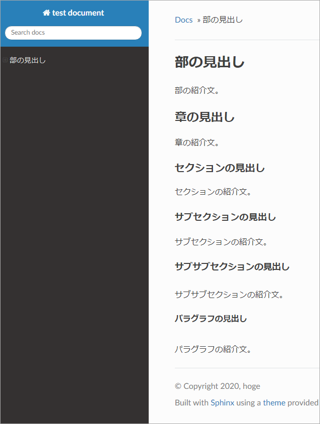
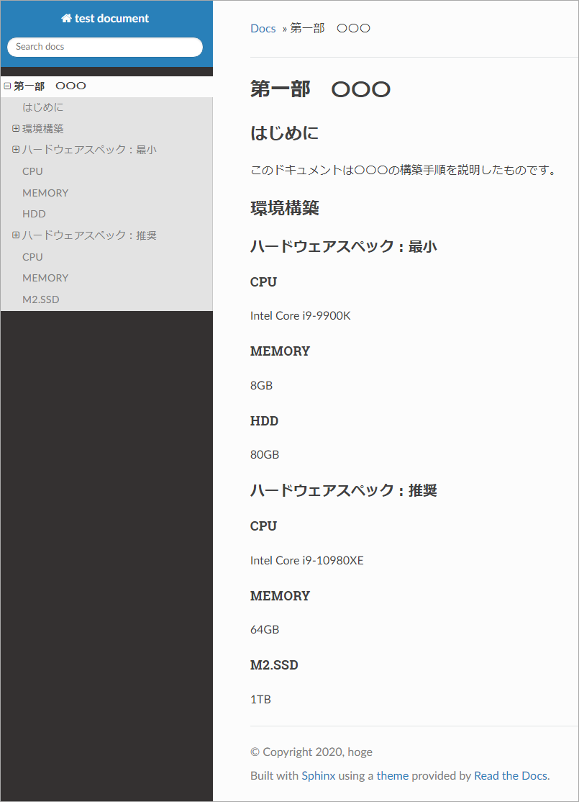
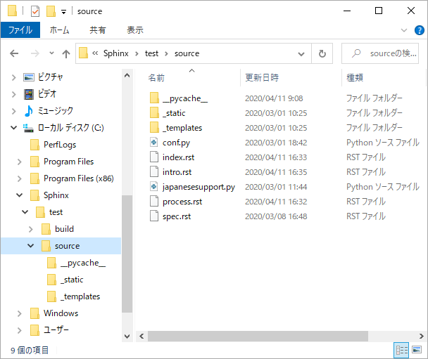

文書の構造¶
Sphinx の文書ファイル¶
Sphinx は reStructuredText と呼ばれるマークアップ言語を使用して文書を書きます。
reStructuredText で書いたファイル自体はテキストファイルですが、ファイル拡張子は
.rstです。HTML に変換したとき、1 つの rst ファイルが 1 つの HTML ファイルになります。
インデントは 3 文字単位です。タブ文字は使用できません。
"index.rst" ファイルがすべての文書の起点です。すべての
.rstファイルは "index.rst" を起点に tree 状に結合されます。
見出し¶
見出しの構成¶
文書のくくりは大きな方から 「章」→「セクション」→「サブセクション」→「サブサブセクション」→「パラグラフ」 になります。
それぞれのくくりの最初に記述する見出しは次のように記述します。 HTML に変換したときは、それぞれ異なるサイズの文字に変換されます。
見出しに使用する
*や=など記号は見出しの文字列と同じまたはそれよりも長くなければなりません。
##########
部の見出し
##########
**********
章の見出し
**********
セクションの見出し
==================
サブセクションの見出し
----------------------
サブサブセクションの見出し
^^^^^^^^^^^^^^^^^^^^^^^^^^
パラグラフの見出し
""""""""""""""""""""
見出しの例¶
実際に "index.rst" ファイルを変更し、各見出しのサイズなどの見え方を確認します。 "sphinx-quickstart" コマンドで作成した "index.rst" ファイルの内容をすべて削除し、次のように変更しました。
##################################################
部の見出し
##################################################
部の紹介文。
**************************************************
章の見出し
**************************************************
章の紹介文。
セクションの見出し
==================================================
セクションの紹介文。
サブセクションの見出し
--------------------------------------------------
サブセクションの紹介文。
サブサブセクションの見出し
^^^^^^^^^^^^^^^^^^^^^^^^^^^^^^^^^^^^^^^^^^^^^^^^^^
サブサブセクションの紹介文。
パラグラフの見出し
""""""""""""""""""""""""""""""""""""""""""""""""""
パラグラフの紹介文。
HTML に変換した結果です。それぞれの見出しの文字サイズが少しずつ異なっています。
目次と見出し¶
画面左側に表示されるドキュメントの目次は Sphinx が文書構造を元に自動的に作成します。例えば "index.rst" ファイルの内容が次のような場合の目次を確認します。
##################################################
第一部 〇〇〇
##################################################
**************************************************
はじめに
**************************************************
このドキュメントは〇〇〇の構築手順を説明したものです。
**************************************************
環境構築
**************************************************
ハードウェアスペック：最小
==================================================
CPU
--------------------------------------------------
Intel Core i9-9900K
MEMORY
--------------------------------------------------
8GB
HDD
--------------------------------------------------
80GB
ハードウェアスペック：推奨
==================================================
CPU
--------------------------------------------------
Intel Core i9-10980XE
MEMORY
--------------------------------------------------
64GB
M2.SSD
--------------------------------------------------
1TB
見出しを使用して自動的に目次を作成します。
".rst" ファイルの階層化 : toctree ディレクティブ¶
ドキュメントの分割¶
「目次と見出し」のように 1 つのrstファイルに複数の「部」や「章」などを書いてもドキュメントは作成できます。しかし、この方法ではページのサイズが長くなり、視認性や検索性、メンテナンス性などに劣るドキュメントになります。
この問題の解決方法は文書を「章」などのある程度のまとまりで分割し、そのまとまりごとにrstファイルを作成することです。
今回のファイルの配置場所です。すべて "index.rst" ファイルと同じフォルダーに配置しました。
各ファイルの内容と表示内容です。
■ index.rst
##################################################
〇〇〇構築手順書
##################################################
.. toctree::
intro.rst
./spec
process
■ intro.rst
**************************************************
はじめに
**************************************************
ご挨拶
==================================================
この度は弊社製品である 〇〇〇 をご購入くださりありがとうございます。
〇〇〇 は皆様の作業効率および生産性向上を目的に開発しました。不具合が
あれば、下記までご連絡ください。
お問い合わせ先
==================================================
電話 +81-12-3456-7890
■ spec.rst
**************************************************
構築対象機器の要件
**************************************************
〇〇〇 をインストールする機器の要件を説明します。
最小要件
==================================================
□□□ の要件を満たしていること。
推奨要件
==================================================
△△△ の要件を満たしていること。
■ process.rst
**************************************************
インストール手順
**************************************************
〇〇〇 のインストール手順を説明します。
機器の準備
==================================================
「最小要件」以上の危機を準備、電源を ON にしてください。
インストールメディアの準備
==================================================
インストールメディアは弊社サポートサイトからダウンロードできます。
サイトの URL はユーザー登録時に弊社から送信したメールに記載されて
います。
toctree ディレクティブ¶
rstファイル間の階層構造はtoctreeディレクティブで定義します。toctreeディレクティブは上位階層のrstファイルに指定します。上位階層と下位階層の
rstファイルの設置場所は同じフォルダ－でも、異なるフォルダーでも問題ありません。下位階層の
rstファイルの指定は上位階層のrstファイルを起点とした相対指定で行います。
重要
"index.rst" ファイル以外のrstファイルは、必ずtoctreeディレクティブで指定されなければなりません。
ファイルの配置位置とrstファイル間の関係です。
"index.rst" ファイルの内容です。
##################################################
〇〇〇構築手順書
##################################################
.. toctree::
intro.rst
./spec
process
HTML に変換すると、下位階層の
rstファイルの見出し部分を使用した目次が作成されます。目次にはすべての見出しが展開・表示されます。下位階層の
rstファイルの指定方法は拡張子付き、相対パスであることを示す、ファイル名だけのいずれの形式でも問題ありません。
下位階層の "rst" ファイルを下位フォルダーに配置した場合¶
下図のように下位階層のrstファイルを下位階層のディレクトリーに配置すると、階層構造とファイルの配置が一致し、ドキュメントの流れを追うのが楽になります。
PS C:\Sphinx\test\source> tree /A /F
フォルダー パスの一覧
ボリューム シリアル番号は AEB0-CDA6 です
C:.
| conf.py
| index.rst
| japanesesupport.py
|
+---intro
| intro.rst
|
+---process
| process.rst
|
+---spec
| spec.rst
|
+---_static
+---_templates
\---__pycache__
japanesesupport.cpython-37.pyc
PS C:\Sphinx\test\source>
フォルダ構成を反映した "index.rst" ファイルの内容です。
**************************************************
〇〇〇構築手順書
**************************************************
.. toctree::
intro/intro
spec/spec
process/process
toctree ディレクティブのオプション¶
numbered オプション¶
下位階層のrstファイルの見出しに自動で通し番号を付けます。
##################################################
〇〇〇構築手順書
##################################################
.. toctree::
:numbered:
intro/intro
spec/spec
process/process
maxdepth オプション¶
目次として展開する見出しのレベルを指定します。
##################################################
〇〇〇構築手順書
##################################################
.. toctree::
:maxdepth: 1
intro/intro
spec/spec
process/process
numberedオプションと併用した場合です。
##################################################
〇〇〇構築手順書
##################################################
.. toctree::
:maxdepth: 1
:numbered:
intro/intro
spec/spec
process/process
ドキュメントの分割 : include ディレクティブ¶
includeディレクティブは指定したファイルの内容を展開します。この機能を使用して「章」単位に分割したrstファイルを「セクション」単位に分割します。
分割前の "process.rst" の内容です。
**************************************************
インストール手順
**************************************************
〇〇〇 のインストール手順を説明します。
機器の準備
==================================================
「最小要件」以上の危機を準備、電源を ON にしてください。
インストールメディアの準備
==================================================
インストールメディアは弊社サポートサイトからダウンロードできます。
サイトの URL はユーザー登録時に弊社から送信したメールに記載されて
います。
"process.rst" の分割後の process フォルダーの状態です。rstファイル以外にtxtファイルが 2 つ増えています。"process.rst" ファイルを分割した（切り出した）内容が、このtxtファイルに記録されています。
分割後の "process.rst" ファイルの内容です。
**************************************************
インストール手順
**************************************************
〇〇〇 のインストール手順を説明します。
.. include:: process-junbi.txt
.. include:: process-media.txt
"process-junbi.txt" ファイルの内容です。
機器の準備
==================================================
「最小要件」以上の危機を準備、電源を ON にしてください。
"process-media.txt" ファイルの内容です。
インストールメディアの準備
==================================================
インストールメディアは弊社サポートサイトからダウンロードできます。
サイトの URL はユーザー登録時に弊社から送信したメールに記載されて
います。